의령 한복부부사진 — 함께 걸어온 계절을 사진에 담는 일
2026-10-20 발행
의령의 아침은 조금 느립니다. 궁류면 청정로를 따라 올라오면, 길 옆으로 감나무가 늘어서고 그 끝에 김작가 사진이야기가 있습니다. 오늘 이곳에 한 쌍의 부부가 왔습니다. 결혼한 지 오래된 부부입니다. 아내가 먼저 웃었고, 남편이 뒤따라 웃었습니다.
한복부부사진은 신혼부부의 사진과 다릅니다. 같은 옷을 입고 서 있는데도, 그 안에 쌓인 시간이 다릅니다. 손을 잡는 방식이 조금 서툴고, 서로를 부르는 말투가 익숙합니다. 그 익숙함이 사진에 담깁니다. 그래서 한복부부사진은 예쁘게 찍는 일보다, 지금의 두 사람을 그대로 남기는 일에 가깝습니다.

의령 사진관 앞 돌담길. 한복 자락이 천천히 움직인다
김작가는 카메라를 들기 전에 먼저 이야기를 듣습니다. 어떻게 만났는지, 결혼 생활은 어땠는지, 아이들은 어디서 무엇을 하는지. 그 이야기 속에서 사진의 방향이 정해집니다. 오늘은 두 사람이 걸어온 길을 사진으로 다시 걷기로 했습니다.
돌담을 따라 걷는 일
먼저 걸었습니다. 손을 잡지 않고 나란히. 처음에는 어색해서 조금 떨어져 걸었습니다. 김작가가 뒤에서 말했습니다. "조금만 더 가까이." 한 걸음 붙자, 두 사람의 그림자가 하나가 되었습니다. 사진은 그때 눌렀습니다.
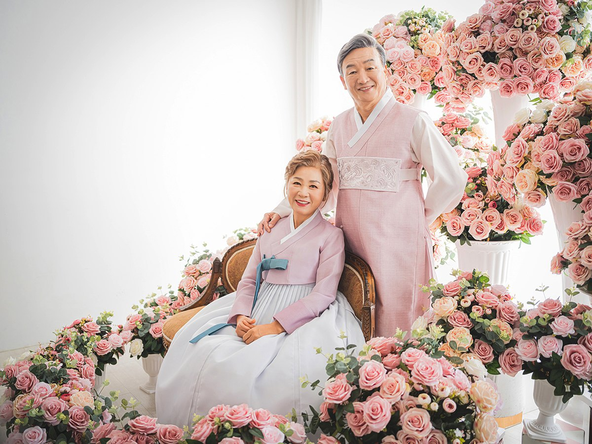
돌담과 감나무 사이, 나란히 걷는 두 사람
한복은 걷는 모습이 곱습니다. 치맛자락이 발목을 스치고, 저고리 소매가 바람에 조금씩 흔들립니다. 정지한 사진보다 걷는 사진이 사람을 살립니다. 김작가는 걷는 장면을 찍을 때 유난히 많이 기다립니다. 발이 땅에 닿는 순간, 옷이 가장 자연스럽게 흐르는 순간이 따로 있기 때문입니다.
물가에 앉아 있던 오후
사진관 마당을 지나면 작은 물이 있습니다. 두 사람은 돌에 걸터앉았습니다. 아내가 치맛자락을 정리하자 남편이 손을 내밀었습니다. 말없이 이어진 손. 그 장면은 연출하지 않아도 나옵니다. 오래 함께 산 사람에게는 그런 몸짓이 몸에 남아 있습니다.
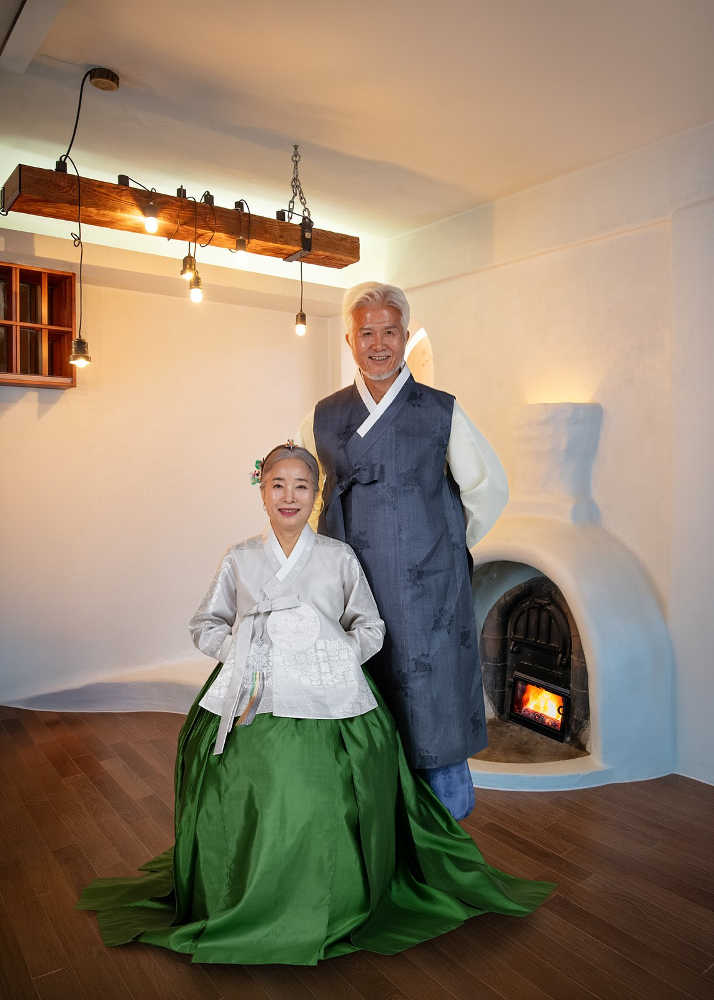
물가에 앉아 손을 잡은 두 사람
의령점에는 천여 평의 마당과 야외 촬영장이 있습니다. 계절마다 얼굴이 바뀝니다. 봄에는 벚나무 길이 하얗게 덮이고, 여름에는 초록이 짙어지고, 가을에는 감이 익습니다. 오늘은 초록이 가장 깊은 날이었습니다.
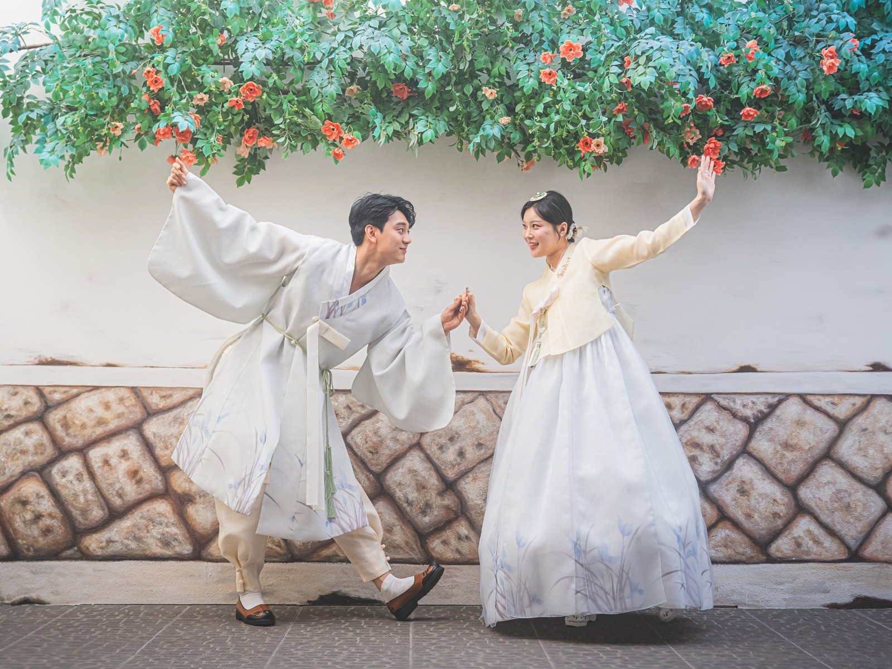
초록이 짙은 마당에서
웃음이 터진 순간
촬영 중간에 김작가가 농담을 하나 던졌습니다. 남편이 먼저 웃었고, 아내가 그 얼굴을 보고 따라 웃었습니다. 그 웃음은 계획한 것이 아니었습니다. 사진은 그런 순간에 제일 잘 나옵니다. 그래서 촬영은 대화의 연속입니다. 말이 끊기면 표정도 끊깁니다.
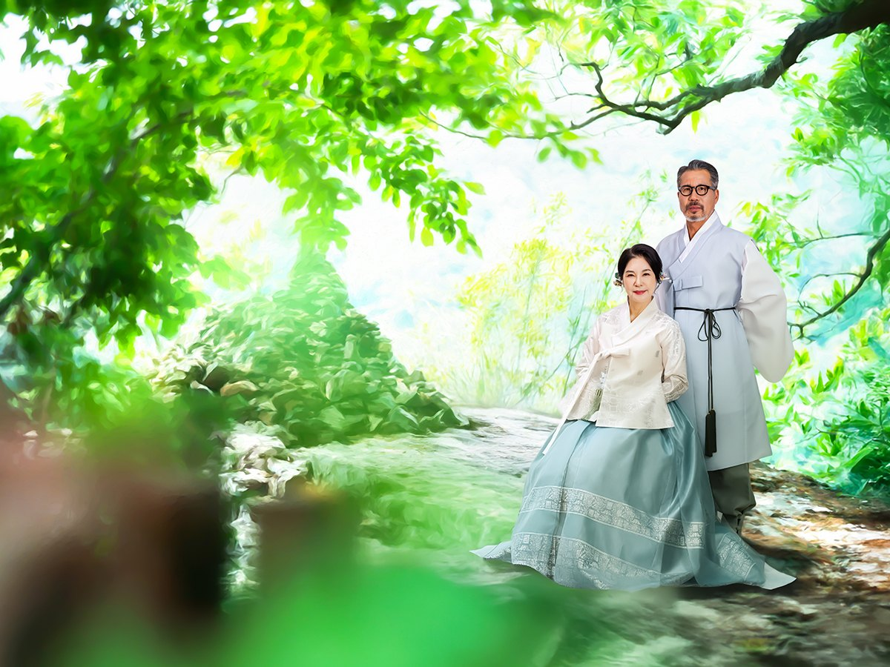
꽃 아래에서 웃음이 터진 순간
한복은 색이 중요합니다. 아내의 연분홍 저고리와 남편의 옥색 두루마기가 서로를 살립니다. 같은 계열로 맞추면 차분해지고, 반대 색을 고르면 사진이 생기 있습니다. 의상실에서 두 사람이 직접 색을 맞춰 보는 시간도 사진의 일부입니다.
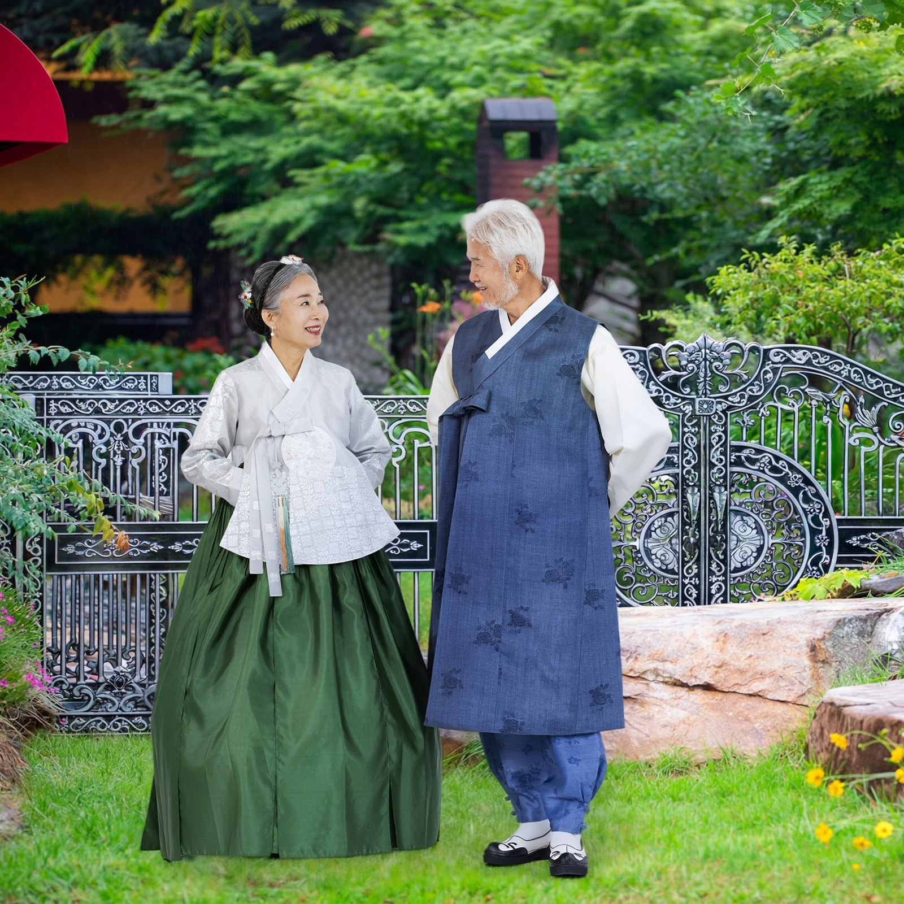
꽃과 함께한 한 컷
두 사람만의 표정
단체 사진이 아니라 부부 사진이라 좋은 점이 있습니다. 두 사람의 표정을 오래 들여다볼 수 있다는 것입니다. 아내가 고개를 숙여 웃을 때 남편이 그 얼굴을 보는 눈빛, 손등에 얹은 손, 어깨에 기댄 머리. 그 작은 것들이 사진마다 다릅니다.
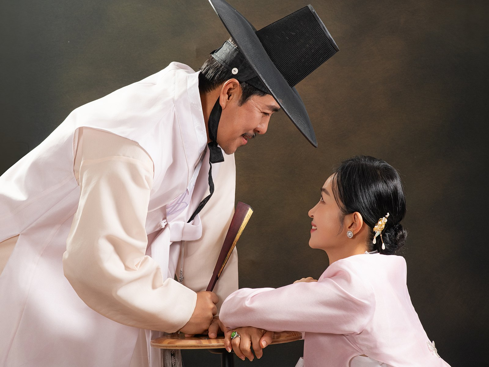
갓을 눌러쓴 남편과 그를 올려다보는 아내
갓을 쓰고 한 컷을 찍었습니다. 처음에는 쑥스러워하시더니, 곧 장난기가 올라오셨습니다. 갓을 살짝 기울이고 아내를 내려다보는 표정이 배우처럼 좋았습니다. 촬영장에는 이런 장난이 필요합니다. 장난이 있어야 다음 컷이 편해집니다.
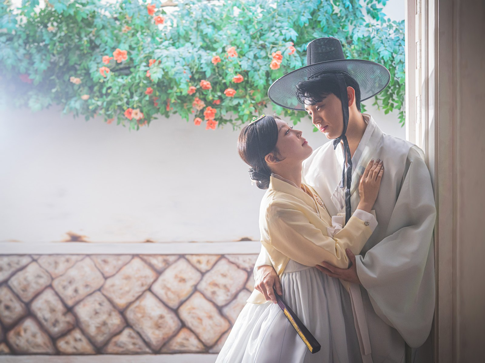
가만히 마주 보는 두 사람
벽에 기대어 선 두 사람을 찍었습니다. 아내가 남편의 어깨에 손을 얹고, 남편이 벽을 짚었습니다. 아무 말 없이 십 초쯤 서 있었습니다. 그 십 초 동안 표정이 세 번쯤 바뀌었습니다. 그중 두 번째가 제일 좋았습니다.
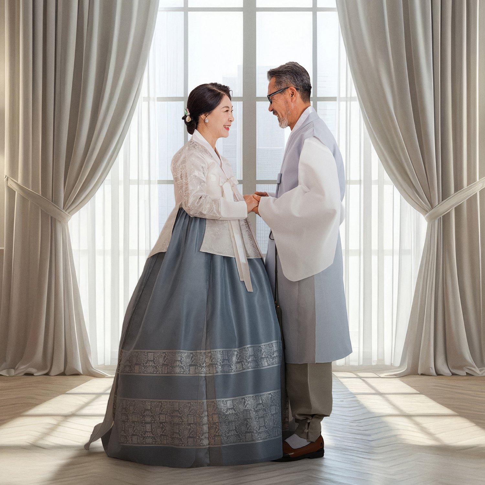
벽에 기대어 선 두 사람
저녁이 오면 빛이 달라집니다
해가 기울면 사진의 온도가 바뀝니다. 같은 자리, 같은 옷인데 빛이 누렇게 깔리면 사진이 다른 이야기를 합니다. 의령은 해가 지는 방향이 탁 트여 있어 저녁 촬영이 좋습니다. 그래서 오후 늦게 예약을 잡으시는 분들도 있습니다.
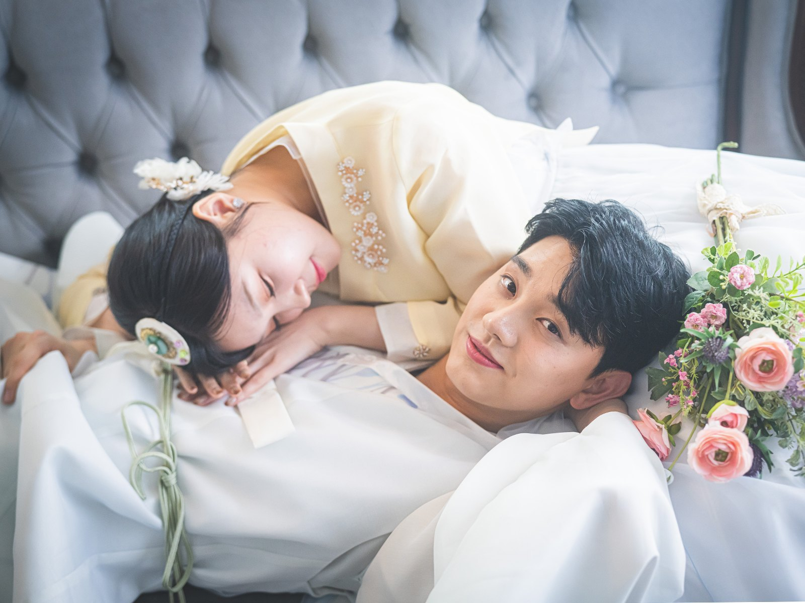
해 질 무렵의 두 사람
마지막으로 실내에서 한 컷을 더 찍었습니다. 하얀 벽과 아치, 따뜻한 조명. 한복의 색이 조용히 살아났습니다. 실내와 야외를 오가면 사진의 리듬이 생깁니다. 한 곳에서만 찍으면 아무리 좋은 사진도 비슷해집니다.
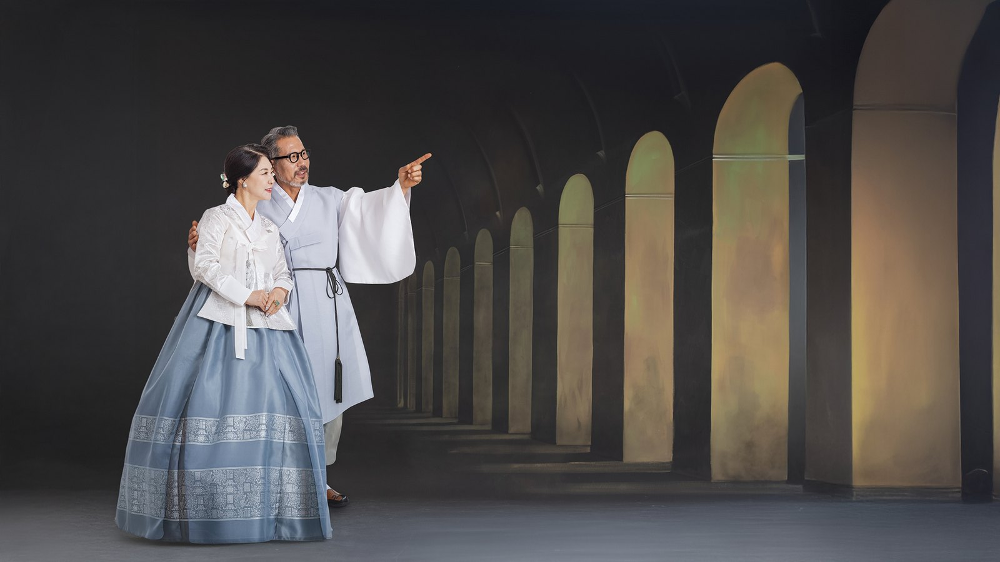
아치 앞에서
촬영은 두 시간 남짓 걸렸습니다. 중간에 차를 마시고, 옷을 한 번 갈아입고, 마당을 한 바퀴 걸었습니다. 서두르지 않았습니다. 서두르면 표정이 굳습니다. 사진은 기다림이 만드는 경우가 많습니다.
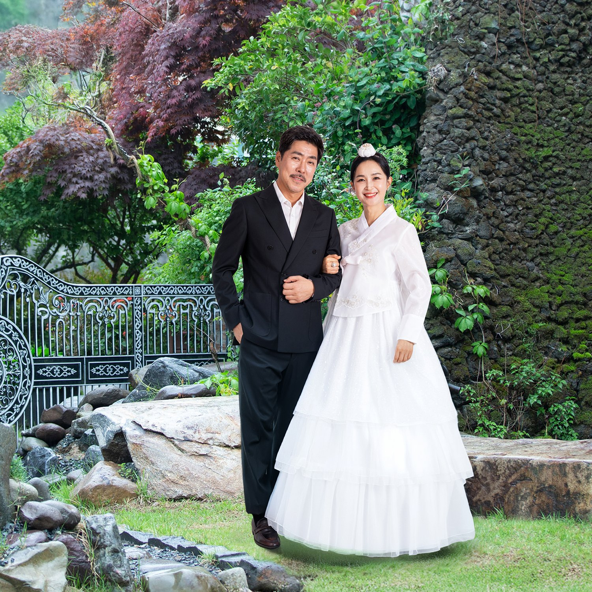
흰 드레스로 갈아입고 한 컷
한복부부사진을 찍으러 오시는 분들은 대개 이렇게 말합니다. "이 나이에 무슨." 그런데 사진을 보고 나면 말이 달라집니다. "생각보다 괜찮네." 괜찮은 정도가 아닙니다. 지금의 두 사람이 제일 잘 나온 사진이 됩니다.
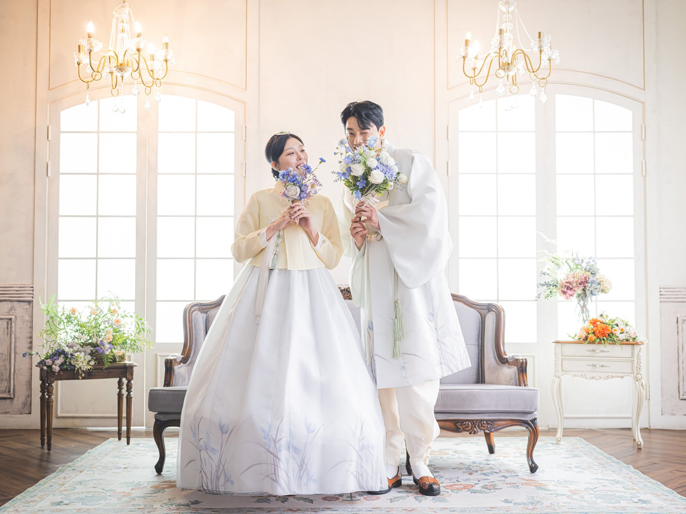
돌담 앞에서
사진을 고르는 시간
촬영이 끝나면 사진을 고릅니다. 두 사람이 모니터 앞에 앉아 한 장씩 넘깁니다. 의견이 갈릴 때가 많습니다. 아내는 웃는 사진을, 남편은 걷는 사진을 고릅니다. 그래서 권합니다. 한 사람당 한 장씩, 반드시 자기 마음에 드는 사진을 고르라고.
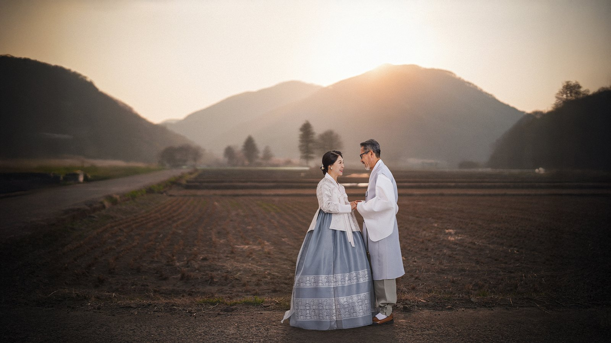
마당에서
고른 사진은 원목 액자에 넣습니다. 액자는 직접 만듭니다. 밝은 오크부터 짙은 월넛까지, 사진의 분위기에 맞춰 고르시면 됩니다. 거실 벽에 걸 사진이라면 가로로 긴 컷이, 침실 한쪽이라면 세로 컷이 잘 맞습니다.
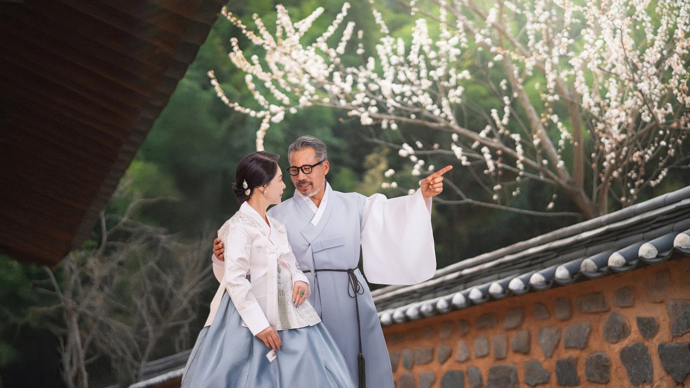
의령의 오후
의령점에 오시면 촬영 전에 마당을 한 바퀴 돌아보시길 권합니다. 어디서 찍을지 미리 보면 몸이 조금 풀립니다. 감나무 아래, 돌담 옆, 작은 연못가. 서 있는 자리마다 빛이 다르고, 빛마다 사진의 표정이 다릅니다.
한복은 의상실에서 고르십니다. 저고리 색과 치마 색을 따로 맞출 수 있고, 남편 두루마리와 색을 견줘 보실 수도 있습니다. 아내가 먼저 고르고 남편이 거기에 맞추는 경우가 많습니다. 그 시간이 벌써 즐겁습니다. 옷을 고르다가 웃음이 나오면, 그날 사진은 잘 나옵니다.
머리도 정리해 드립니다. 한복은 머리 모양에 따라 분위기가 크게 달라집니다. 쪽을 찌고, 가르마를 타고, 간단히 묶는 것만으로도 인상이 달라집니다. 촬영 전에 거울을 한 번 보고, 두 사람이 서로의 모습을 봐 주는 시간을 꼭 넣습니다.
계절마다 다른 사진을 남길 수 있는 것도 의령의 장점입니다. 봄에는 꽃길, 여름에는 짙은 초록, 가을에는 감과 억새, 겨울에는 눈 내린 마당. 같은 두 사람인데 계절이 배경이 되면 사진의 기억이 달라집니다. 그래서 결혼기념일이 있는 달에 맞춰 예약하시는 분들도 있습니다.
멀리서 오시는 분들은 하루를 비워 두시길 권합니다. 촬영 두 시간, 사진 고르는 한 시간, 마당을 걷는 시간까지 합치면 반나절입니다. 옆에 독채 펜션이 있어 촬영 후 하루 더 머무시는 분들도 있습니다. 서두르지 않는 하루가 사진의 표정을 만듭니다.
사진을 찍는 일은 시간을 붙잡는 일입니다. 붙잡을 수 있는 건 찍었을 때뿐입니다. 오늘 이 부부의 두 시간이 사진 속에 남았습니다. 십 년 뒤에 꺼내 보면, 오늘의 초록과 오늘의 웃음이 그대로 있을 것입니다.
예약은 전화나 카카오채널로 하시면 됩니다. 촬영 날짜와 인원, 원하시는 분위기를 알려 주시면 의상과 동선을 미리 준비합니다. 한복을 가져오셔도 되고, 의상실에서 고르셔도 됩니다. 어떤 쪽이 편하신지 상담 때 말씀해 주세요.
사진은 결국 사람을 남기는 일입니다. 잘 보이려고 애쓰지 않으셔도 됩니다. 오늘 옆에 앉은 사람이 누구인지, 그 사람과 몇 번의 계절을 함께 지났는지. 그게 사진에 담기면 충분합니다. 김작가는 그 장면을 놓치지 않으려고 오늘도 조명을 조금씩 옮기고 있었습니다.
의령 사진관 김작가 사진이야기는 궁류면 청정로 1188에 있습니다. 한복부부사진, 가족사진, 장수사진, 리마인드웨딩을 찍고, 마당과 야외 촬영장, 독채 펜션이 함께 있습니다. 멀리서 오시는 분들은 하루를 천천히 쓰시면 됩니다.
자주 묻는 질문
Q. 한복은 준비해 가야 하나요?
A. 의령점 의상실에서 한복을 고르실 수 있습니다. 가져오셔도 됩니다. 색과 사이즈는 상담 때 미리 확인합니다.
Q. 촬영 시간은 얼마나 걸리나요?
A. 두 시간 남짓입니다. 의상 고르기와 머리 정리, 마당을 걷는 시간까지 포함한 시간입니다. 사진 고르는 시간은 따로 한 시간쯤 필요합니다.
Q. 멀리서 가도 괜찮을까요?
A. 괜찮습니다. 경남 의령군 궁류면 청정로 1188에 있고, 마당과 야외 촬영장, 독채 펜션이 함께 있습니다. 하루를 비워 두시면 훨씬 여유롭습니다.

오시는 곳
김작가사진이야기 의령
- 주소 경남 의령군 궁류면 청정로 1188
- 전화 055-574-3706
- 영업시간 오전 10:00 ~ 오후 7:00
- 예약 전화 상담 · 카카오톡 채널
- 주차 전용 주차장
- 지도 네이버 플레이스에서 보기
한복부부사진, 이런 분께
- 결혼기념일에 두 사람 사진을 남기고 싶은 부부
- 자녀가 부모님 사진을 선물하고 싶은 경우
- 한복을 입고 야외에서 천천히 찍고 싶은 분
궁류면 청정로, 감나무 길 끝에서 기다리고 있겠습니다.
이 글에 한마디
댓글창을 준비하고 있습니다. 그동안 궁금한 점은 카카오채널로 남겨 주시면 바로 답변드립니다.
카카오채널로 한마디 남기기